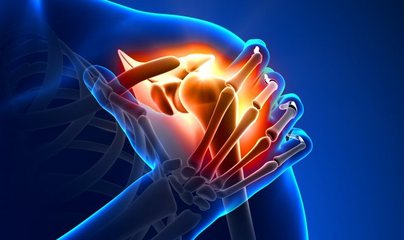

В США разработали безопасный и эффективный метод анестезии с помощью радиоволн
Доктор Феликс М. Гонсалес из Университета Эмори (США) разработал и успешно применил новый метод длительного обезболивания, основанный на использовании низкочастотного радиоизлучения. Его первыми пациентами стали люди с хроническими формами артрита, которым постоянно требуется снижать боль в суставах. Но в перспективе Гонсалес надеется, что его разработка может стать универсальным анестезирующим средством. Гонсалес нашел способ победить две главных проблемы нынешних обезболивающих на основе опиоидов и комбинаций анестетиков с кортикостероидами. Первые по своей сути являются наркотиком и вызывают опасное привыкание. Вторые же очень быстро теряют эффективность и организм пациента становится менее восприимчив к ним. Типовая картина – первая доза снимает боль на шесть месяцев, вторая только на три, а эффект от третьей не держится и месяца, после чего анестезия перестает работать. Доктор Гонсалес предложил заменить инъекции активного вещества энергетическим воздействием, которое носит название «радиочастотной абляции с использованием охлаждения». В проблемный участок тела вводятся иглы-электроды, через которые передаются низкочастотные колебания. Они «оглушают» нервы, блокируя передачу сигнала о боли в головной мозг. Да, это не устраняет саму проблему, но обезболивающее для этого и не предназначено. В исследовании с 23 пациентами, организмы которых уже перестали воспринимать стандартные обезболивающие, за три месяца удалось достичь впечатляющих результатов. У пациентов с артритными болями в плече неприятные ощущения снизились на 85%, суставы восстановили функциональность на 74 %. Аналогичные показатели для случаев с болями в бедре 70 % и 66 %. На данный момент никакого привыкания или снижения эффективности радиочастотной анестезии не выявлено, хотя сам Гонсалес признает, что находится в самом начале большого пути. Сейчас он ищет возможность применить свой метод для помощи онкобольным.